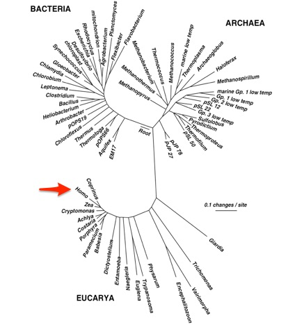

4 Biology basics
With all this complexity, how do you begin to study the abundance of life around us? And then, how do we apply what we know about the zillions of organisms around us, to how they relate to what’s inside us?
Like life itself, biology is a very broad field. Fortunately, despite the incredible variations, scientists have discovered a few simple traits and rules that apply to every life form. For the special life form homo sapiens, we have also learned a number of simplifications that will let us talk in more detail later.
4.0.1 The Basics
The study of biology starts with the cell, those tiny self-contained blocks that are the very definition of life. From the most humble microbe to the biggest animal, every living thing is made of these structures, which are really just miniature chemical reactors that pull external molecules from their environment and reassemble them in ways that perpetuate the reaction.
Everything in the universe tends over time to fall into disorganized entropy, but cells contain many tricks, honed over billions of years of evolution, to thrive. Despite the diversity of life, a surprising number of those tricks are shared by all cells: a wall to protect and allow exchanges with the outside world, a means of storing information through DNA, and of course a process of reproduction.
The biggest technical difference among cells is not size or even function, but rather the distinction between two broad categories: eukaryotes, which are the cells of everything from corn plants to humans to fungi and amoebas, and prokaryotes, which are always single-celled bacteria and other microbes. It’s interesting enough that all life could be characterized into these distinct groups, but if you look at the DNA that defines each cell, you will find some other odd differences that hint at more refined relationships among living things.
A cell’s DNA contains all the information needed to create another copy of itself; even the instructions for how to do the copying are just a sequence of predictable DNA letters written somewhere in the genetic code of all cells. This very important copying function is performed by a ribosome, which is a complicated but well-studied part of every living thing. Because the ribosome has such a fundamental function, it tends not to fall prey to many mutations over time; after all, a single DNA letter change in the ribosome is almost always fatal to the entire cell. But every so often — maybe every few million years — there is a mutation in some part of the ribosome, and this leads us to a clever way to understand better how living things are related to one another.
Humans and monkeys, for example, may differ in many different parts of their DNA, but their ribosomes are nearly identical. In fact, the ribosomes of all mammals and even all vertebrates are virtually the same. Well, there are some differences, but interestingly the differences between large, obvious groupings like vertebrates or invertebrates are much more significant than the differences between different vertebrates, or between mammals or other creatures.
In fact we can even quantify the differences, and scientists over the years have done exactly that. The ribosomes of humans and monkeys, for example, are different in only 10 places — practically nothing in a molecule that consists of a few thousand nucleotides connecting dozens of proteins. Similarly, the ribosomes of vertebrates and invertebrates are different in perhaps 100 places – clearly much more significant than the differences within each grouping, but still not terribly different relative to the entire ribosome.
The ribosomes of prokaryotes and eukaryotes, on the other hand, can be quite different: perhaps 1000 places (to continue this very-rough-but-sort-of-useful metric). The point is that even at the molecular, ribosome level, we can see obvious genetic differences even if the physical differences between two organisms aren’t necessarily obvious at first glance. A one-celled eurkaryote, like an amoeba or algae, for example, might seem like it should share something in common with a one-celled prokaryote, but looks are entirely deceiving: nobody looking just at the ribosome could possible mistake these as similar.
Now, scientists have mapped the differences in ribosomal structure among nearly all living things and this general rule always applies: the groupings of life forms are directly related to the similarities or differences in their ribosomes.
Meanwhile, scientists have made estimates of how long it takes, given various assumptions, for a series of step-by-step mutations to result in a differently-sized ribosome. In other words, using some basic chemistry that is easily demonstrated experimentally in a lab, we can offer some reasonable guesses for the number of generations it would take for a given level of random mutations to result in the differently-sized ribosomes we see in nature. Add it all up, and behold: you can see a reasonable fit with the clues we have in the fossil record and the geological record for the same creatures.
None of this is perfect, of course, but the point is that we have a crude way to quantify how different one organism is from another and, if you like, we can guess how long it would take for a single common ancestor to accumulate enough random mutations to account for the differences between any two life forms.
So far so good. Next let’s imagine we have a circle, where a single cell begins in the middle, divides into two cells, and those cells divide, etc. for zillions of years until there are clear ribosomal differences between each line. Let’s call this a family tree and take all known life forms and spread them into this circle.
If you do that, you’ll find that the number of mutations necessary to generate all the variation found in eukaryotes – everything from corn plants to people – would take up only a tiny sliver of that circle. The rest of life — in particular the microbial life of prokaryotes – is so unimaginably diverse, that a space alien looking at earth’s lifeforms could well conclude that the differences between humans and corn plants aren’t significant enough to worry about.
That’s how complicated the world of bacteria can be.

4.0.2 Taxonomy
How do you talk about the relationships between various different life forms?
A taxon is a simple unit of life. A homo sapiens is a taxon, but so is a primate. A mammal is a taxon too. It might seem odd in the ordinary biological world to bother using the same term ‘taxon’ to refer to all of those units, but for bacteria and anything that reproduces asexually, it’s an important distinction because often, taxonomists don’t agree about whether a group of organisms is part of the same taxon or not.
Since Carl Linnaeus in the 1700’s, the science of taxonomy divides all life into seven major categories: Kingdom, Phylum, Class, Order, Family, Genus, Species (which I was taught in sixth grade to remember by the mnemonic “King Philip Came Over for Girl Scouts”).
Bacteria make up their own kingdom. Just as the animal kingdom includes everything from humans to jellyfish to beetles, the diversity of bacterial life is enormous, a point which can’t be emphasized too much. This is true at every rank in the taxonomy. Even two organisms that are the same at a lower rank, like genus, might have radically different affects on the human body, just as a member of the animal genus Canis could be anything from a wolf or coyote to a Chihuahua.
You cannot mix and match these ranks. If you know something about the number of organisms in one genus, for example, this is meaningful only in comparison to the numbers of another genus. Keep that in mind during our analysis.
4.0.3 Microbiology
Before we get to the nuts and bolts of analyzing the microbiome, it’s helpful to review a few basics of microbiology.
This section explains more about cells, but now from a chemical point of view. It’s through identifying these chemicals that we are able to understand how the entire system works. Chemists and biologists have developed many brilliant techniques for identifying these processes, nearly all of which take place at microscopic levels. How we are able to tell what’s happening is a subject worthy of its own book, but here we will concern ourselves with understanding how we are able to convert the happenings in the physical world of the cell, to the software world, where we can do the analysis.
A few questions to answer:
- How do we see things at such a tiny scale? How can we be confident that what we see is real?
- How does Next Generation Sequencing work?
- What is a gene, how it creates proteins, and why that matters
- what is a SNP?
Think of cells as self-contained factories that accept tiny chemical raw materials from the outside, process them, and then output byproducts. There is a whole, well-developed chemical explanation for this which we won’t detail, but this long chain of inputs and outputs, carried from cell to cell, is key to the working of every living thing, including humans. The various chemicals passed from cell to cell carry raw materials needed for life, but they also carry information that tells other cells what to do.
All life runs on three chemical building blocks: DNA, RNA, and proteins. Each of these is an arbitrarily-long chain of repeating molecules called nucleotides (DNA or RNA) and amino acids (proteins). Due to constraints on the way atoms interact, the set of building blocks is fixed. All DNA is composed of only four nucleotides: adenine, thymine, guanine, and cytosine, represented by the letters A, T, G, and C. RNA is composed of the same molecules, except that uracile (U) is substituted for thymine.
Similarly, proteins are constructed with only 20 different amino acids, which can again be represented by a short three-character abbreviation.
The correspondence between these different proteins and combinations of DNA or RNA is referred to as the genetic code.
As a programmer looking through all of this, you may immediately be inspired to write your own software version of this. After all, the remarkable consistency between all of these building blocks cries out for manipulation by computer.
In fact, that’s exactly what bioinformaticians do, and numerous software packages have been developed to make it easy to treat these building blocks of life like ordinary computer strings.
Perhaps the biggest challenge is the volume of data to be handled, which can easily be measured in gigabytes for a simple organism, but can require entire server farms in the case of some real-world biological systems. For that reason, much of bioinformatics is about optimizations to improve the speed of processing a large data set, or to simply the presentation in a way that can reveal the most biologically interesting aspects of a problem without wading in over-complexity.
One special protein, DNA, can store information.